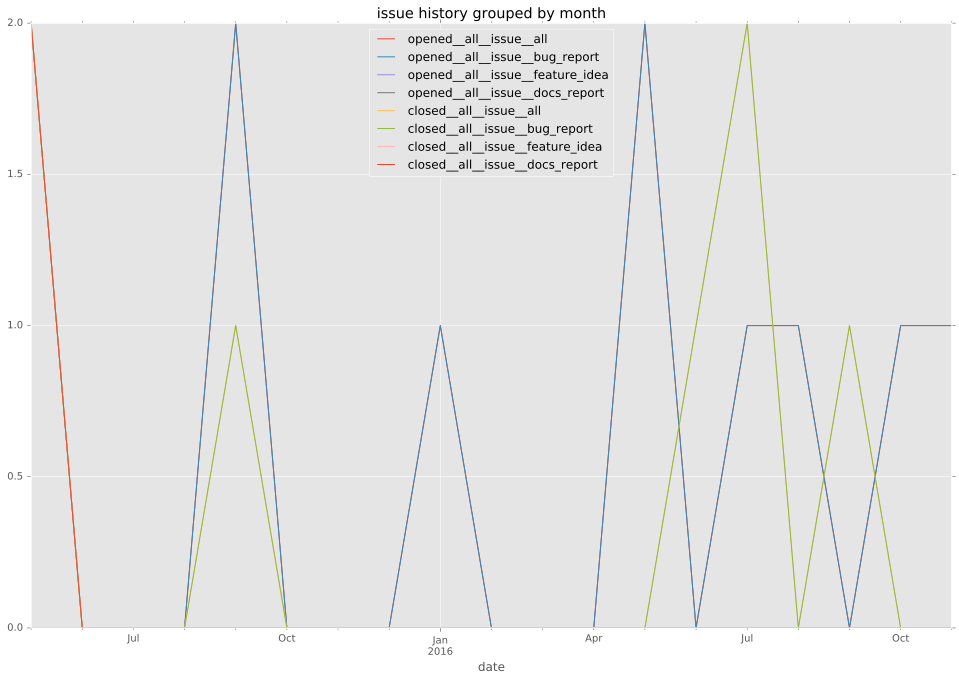
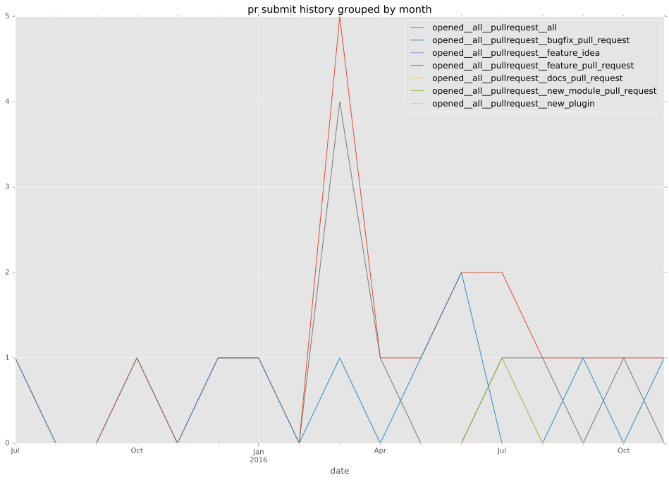
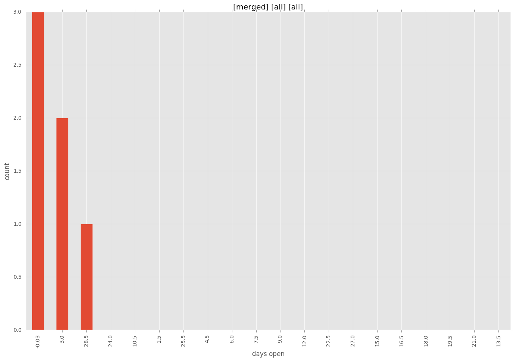
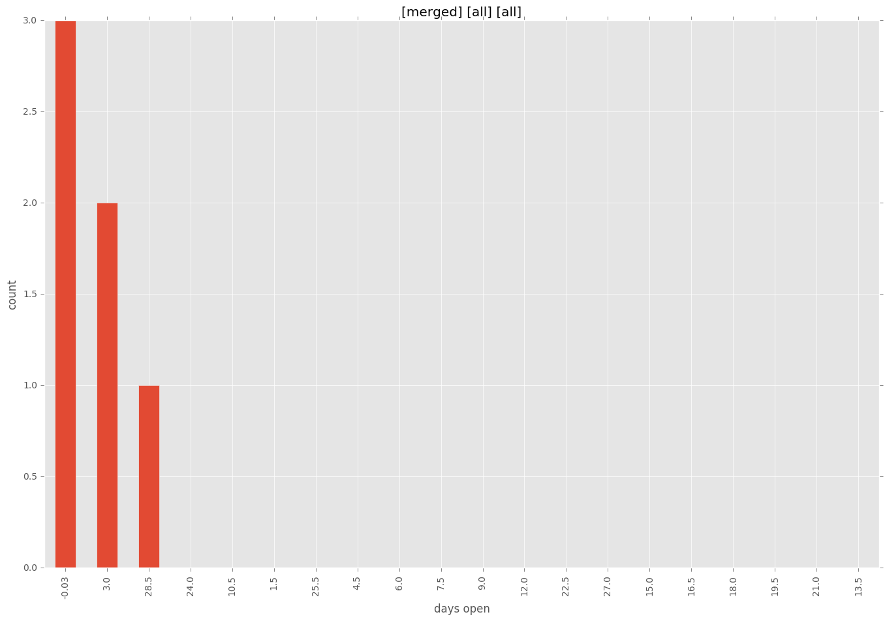

authors
- tombamford
maintainers
- tombamford
contributors
- bcoca : 16 commits
- Constantin007 : 10 commits
- abadger : 3 commits
- jjshoe : 2 commits
- gundalow : 1 commits
- Jmainguy : 1 commits
- ChrisLundquist : 1 commits
total issue counts
feature pull request: 7
docs report: 2
pullrequest: 19
docs pull request: 3
bugfix pull request: 8
issue: 9
new plugin: 1
bug report: 7
issue history

pullrequest history

days open by issue type
bugfix pull request
count: 6
std: 5.7879184514
min: 0
max: 14
median: 4.0
mean: 5.5
all
count: 21
std: 67.378992063
min: 0
max: 312
median: 2.0
mean: 20.8571428571
pullrequest
count: 0
std: nan
min: nan
max: nan
median: nan
mean: nan
docs pull request
count: 4
std: 0.0
min: 0
max: 0
median: 0.0
mean: 0.0
docs report
count: 2
std: 0.707106781187
min: 1
max: 2
median: 1.5
mean: 1.5
feature pull request
count: 4
std: 15.0111069989
min: 4
max: 30
median: 17.0
mean: 17.0
issue
count: 0
std: nan
min: nan
max: nan
median: nan
mean: nan
new plugin
count: 1
std: nan
min: 0
max: 0
median: 0.0
mean: 0.0
bug report
count: 4
std: 152.598602003
min: 0
max: 312
median: 11.0
mean: 83.5
closures grouped by total days open

 
